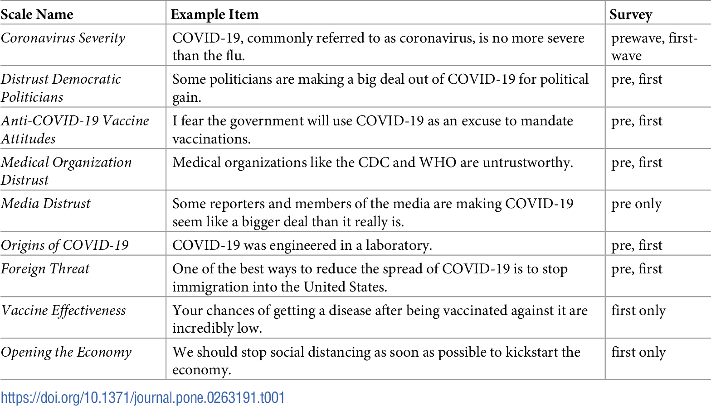
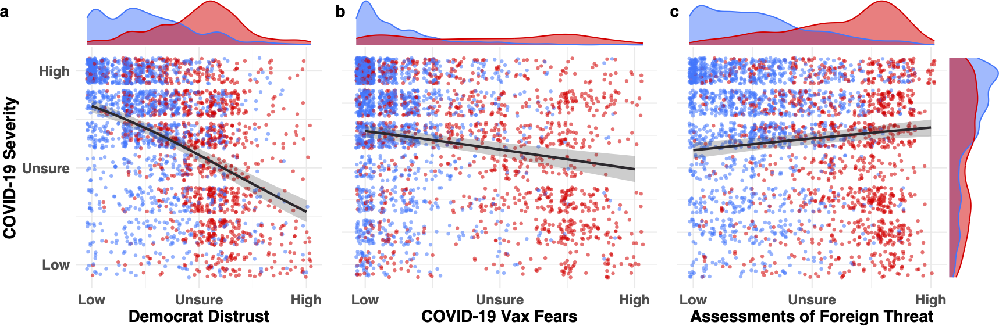
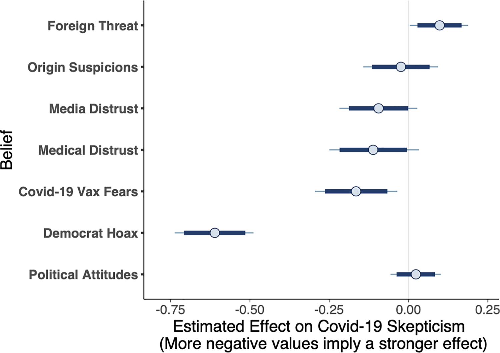
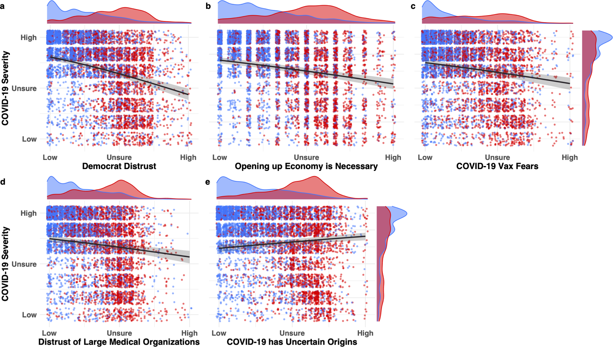
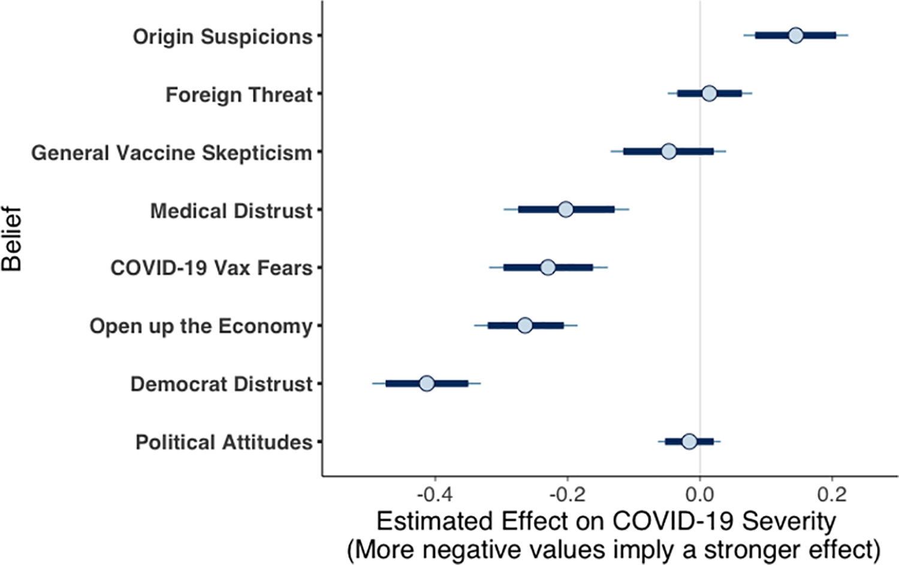

How Distrust Shaped COVID-19 Skepticism
Predictive modeling and survey data
Priniski, J. H., & Holyoak, K. J. (2022). A darkening spring: How preexisting distrust shaped COVID-19 skepticism. PLOS ONE, 17(1), e0263191.
Tracing Skepticism Before and During the First Wave
People rarely hold beliefs in isolation; instead, they hold systems of beliefs that mutually cohere. During the COVID-19 pandemic, many Americans underestimated the virus’s risks despite widespread communication from health experts. Through preregistered surveys and Bayesian modeling, we examined how preexisting distrust in Democratic politicians and medical scientists shaped this skepticism. As the first wave unfolded, skeptical attitudes became more deeply embedded within a complex network of political, economic, and medical beliefs.
Surveying Beliefs as the Pandemic Unfolded
We surveyed Americans on March 13, April 17, and May 19, 2020. Analyses included 628 participants in March and 1,610 across April and May.
.PNG)
We developed nine scales, each composed of three to five items, to measure perceived COVID-19 severity, scientific and medical distrust, and political considerations surrounding the pandemic response.

Early Skepticism Centered on Political Distrust and Vaccine Fears
In March, distrust of Democratic politicians and fears of a future COVID-19 vaccine predicted taking the virus less seriously. Political ideology added no reliable predictive effect after accounting for the other beliefs.
Leave-one-out cross-validation favored a compact model containing political distrust and vaccine fears: its predictive accuracy was within one standard error of the full model. The model using political ideology alone performed worst (Figure 5).
ASurvey Data


BBayesian Predictors


Skepticism Became Linked to a Broader Web of Beliefs
During April and May, support for reopening the economy and distrust of large medical organizations joined political distrust and vaccine fears as strong predictors of skepticism. Uncertainty about the virus’s origins predicted taking it more seriously.
A five-predictor model without political ideology was the simplest model within one standard error of the best predictive accuracy (Figure 9). Comparing the surveys suggests that skepticism became embedded in a wider system of political, economic, and medical beliefs.
ASurvey Data


BBayesian Predictors


Understanding Health Attitudes as Systems of Beliefs
The findings connect health judgments to the broader beliefs people use to interpret new information. They inform my research on narrative agency and educational interventions: understanding resistance to a message requires understanding how it fits into a person’s existing view of the world.
The surveys show how vaccine attitudes fit within broader systems of beliefs. To examine the causal relationships people express in their own words, I tested my AI pipeline for modeling human beliefs on tweets about COVID-19 vaccines. The pipeline maps claims linking vaccination to anticipated benefits and harms, extending this work from survey responses to beliefs expressed in online discussion.